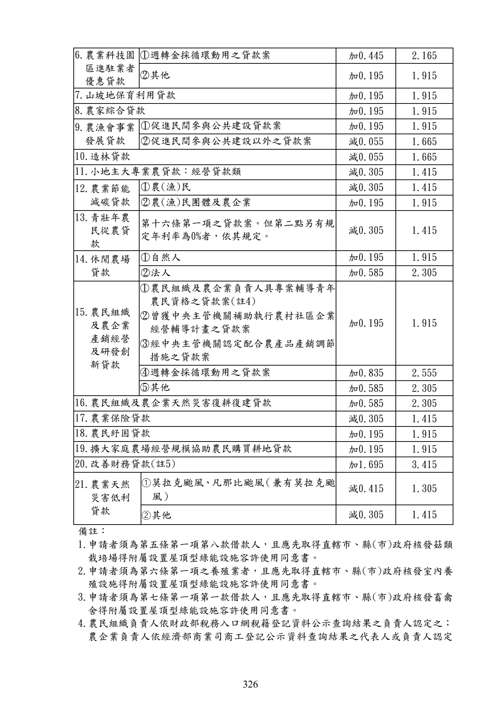

政策性農業專案貸款增修正規定常見問題
手冊頁：326 PDF頁：328／359
{kind=link}

展開查看PDF原始文字層
複雜表格欄列可能因文字層順序失真，請搭配原頁預覽查閱。
6.農業科技園 區進駐業者 優惠貸款 ○1 週轉金採循環動用之貸款案 加0.445 2.165 ○2 其他 加0.195 1.915 7.山坡地保育利用貸款 加0.195 1.915 8.農家綜合貸款 加0.195 1.915 9.農漁會事業 發展貸款 ○1 促進民間參與公共建設貸款案 加0.195 1.915 ○2 促進民間參與公共建設以外之貸款案 減0.055 1.665 10.造林貸款 減0.055 1.665 11.小地主大專業農貸款：經營貸款類 減0.305 1.415 12.農業節能 減碳貸款 ○1 農(漁)民 減0.305 1.415 ○2 農(漁)民團體及農企業 加0.195 1.915 13.青壯年農 民從農貸 款 第十六條第一項之貸款案。但第二點另有規 定年利率為0%者，依其規定。 減0.305 1.415 14.休閒農場 貸款 ○1 自然人 加0.195 1.915 ○2 法人 加0.585 2.305 15.農民組織 及農企業 產銷經營 及研發創 新貸款 ○1 農民組織及 農企業負責人具專案輔導青年 農民資格之貸款案(註4) ○2 曾獲中央主管機關補助執行農村社區企業 經營輔導計畫之貸款案 ○3 經中央主管機關認定配合農產品產銷調節 措施之貸款案 加0.195 1.915 ○4 週轉金採循環動用之貸款案 加0.835 2.555 ○5 其他 加0.585 2.305 16.農民組織及農企業天然災害復耕復建貸款 加0.585 2.305 17.農業保險貸款 減0.305 1.415 18.農民紓困貸款 加0.195 1.915 19.擴大家庭農場經營規模協助農民購買耕地貸款 加0.195 1.915 20.改善財務貸款(註5) 加1.695 3.415 21.農業天然 災害低利 貸款 ①莫拉克颱風 、凡那比颱風 （兼有莫拉克颱 風） 減0.415 1.305 ②其他 減0.305 1.415 備註： 1.申請者須為第五條第一項第八款借款人，且應先取得直轄市、縣(市)政府核發菇類 栽培場得附屬設置屋頂型綠能設施容許使用同意書。 2.申請者須為第六條第一項之養殖業者，且應先取得直轄市、縣(市)政府核發室內養 殖設施得附屬設置屋頂型綠能設施容許使用同意書。 3.申請者須為第七條第一項第一款借款人，且應先取得直轄市、縣(市)政府核發畜禽 舍得附屬設置屋頂型綠能設施容許使用同意書。 4.農民組織負責人依財政部稅務入口網稅籍登記資料公示查詢結果之負責人認定之； 農企業負責人依經濟部商業司商工登記公示資料查詢結果之代表人或負責人認定